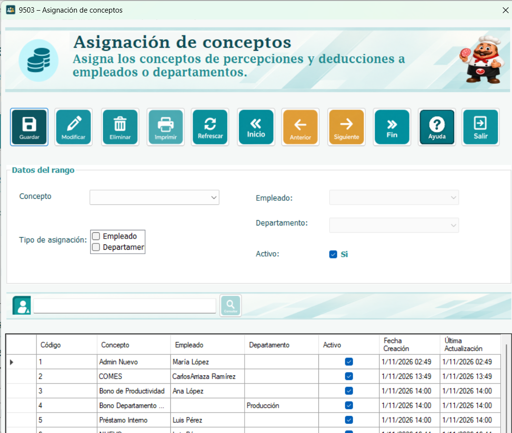
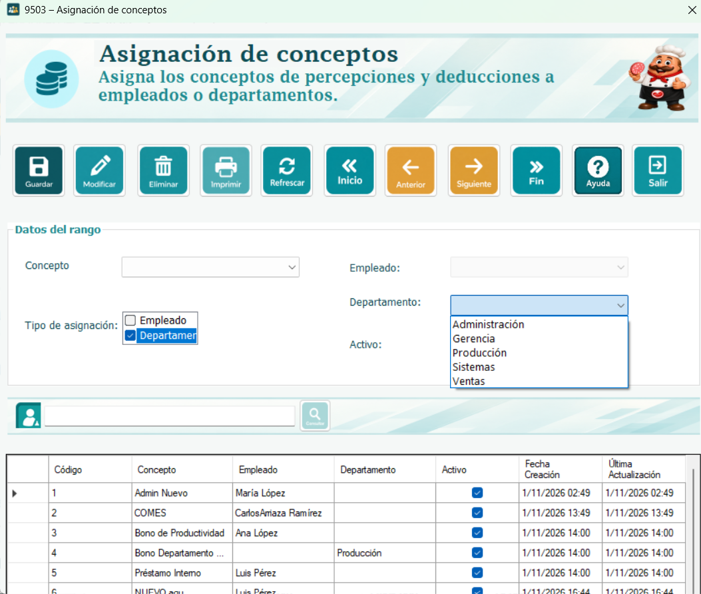
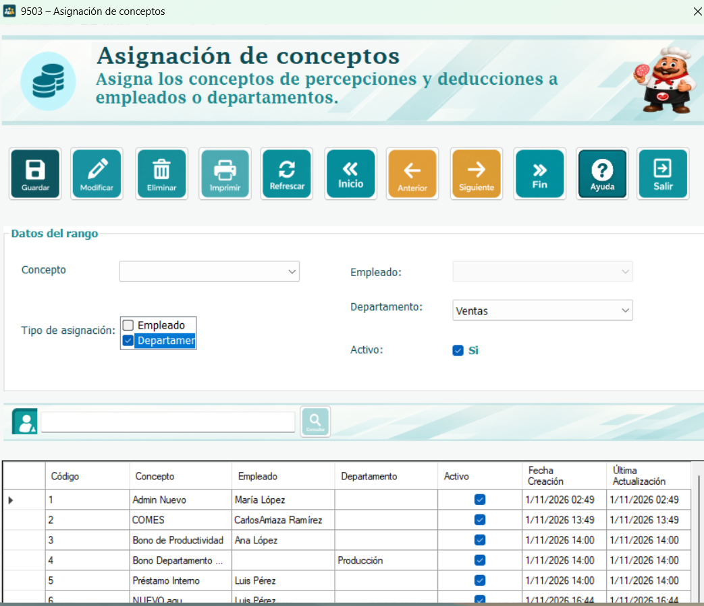

En este formulario se indica qué empleados o departamentos recibirán una percepción o deducción configurada con aplicación Algunos. La asignación relaciona un concepto existente con su destinatario; no define el monto ni cambia su forma de cálculo, que se administran en el catálogo de conceptos y, cuando corresponde, en los rangos salariales.
Si se elige Empleado, la asignación corresponde únicamente a la persona seleccionada. Si se elige Departamento, el cálculo de nómina busca a los empleados que pertenecen a ese departamento. Solo se utiliza un tipo de destinatario por registro: al cambiar de tipo se deshabilita y limpia la selección que deja de corresponder.

El concepto debe estar creado y tener aplicación Algunos para aparecer en la lista. Los conceptos configurados como Todos no requieren una asignación en esta ventana. También deben existir el empleado o el departamento que se desea seleccionar y la conexión a la base de datos debe estar disponible.
La asignación influye en cálculos posteriores. El empleado debe cumplir las condiciones del proceso de nómina, y tanto el concepto como la asignación deben estar activos para que la consulta de conceptos aplicables los considere.
Concepto: Lista de percepciones y deducciones cuya aplicación es Algunos. Seleccione el concepto que desea asignar.
Tipo de asignación: Seleccione Empleado o Departamento. Solo una opción puede quedar marcada.
Empleado: Se habilita al elegir Empleado. Seleccione una persona de la lista; no se escribe un nombre libre.
Departamento: Se habilita al elegir Departamento. Seleccione el área que recibirá el concepto.
Activo: Marcado significa que la asignación está habilitada. Al iniciar un registro se marca de forma predeterminada.

El listado muestra código, concepto, empleado, departamento, estado activo y fechas de creación y actualización. Los identificadores de concepto y destinatario se presentan como nombres. En una asignación individual queda vacío el departamento; en una asignación por departamento queda vacío el empleado.
Al seleccionar una fila, sus datos se copian a los controles superiores. La tabla es de solo lectura: para cambiar una asignación se utilizan los campos y el botón Modificar, no se escribe directamente sobre las celdas.
1. Seleccione el concepto que desea asignar.
2. Marque Empleado o Departamento y elija el destinatario en la lista habilitada.
3. Revise Activo y presione Guardar para crear un registro nuevo.
4. Lea el mensaje del sistema y compruebe que la asignación aparezca en el listado. Después del intento de grabación, el formulario puede limpiar los campos; si se informó un error, vuelva a completar lo necesario.

Seleccione una fila del listado, cambie el concepto, el tipo de destino, el destinatario o la marca Activo y presione Modificar. Si quiere suspender su uso sin borrar la relación, desmarque Activo y guarde mediante Modificar. Presionar Guardar crea una nueva asignación, aunque hubiera seleccionado una fila.
Seleccione la fila y presione Eliminar. La ventana pide confirmar la eliminación; al responder Sí se solicita borrar la relación. Esto elimina la asignación, no el concepto, el empleado ni el departamento. Si la base de datos rechaza la operación, revise el mensaje antes de continuar.
Consulta General filtra conforme escribe, buscando coincidencias en el nombre del concepto, del empleado o del departamento, sin distinguir mayúsculas. Al cambiar el filtro se limpian las selecciones superiores. Inicio y Fin seleccionan la primera o última fila del listado visible; Anterior y Siguiente permiten recorrerlo sin salir de sus límites.
Refrescar borra la búsqueda, vuelve a consultar las asignaciones y deja los campos preparados para otro registro. Las listas de conceptos, empleados y departamentos se cargan al abrir la ventana; si se agregaron opciones desde otra pantalla, cierre y vuelva a abrir este formulario para cargarlas. Imprimir abre el reporte de asignaciones. Para cerrar la ventana puede utilizar la X de su barra de título.
Falta el concepto o el destino: Seleccione el concepto, el tipo de asignación y una opción del destino habilitado.
El empleado o departamento ya tiene el concepto: Busque la asignación existente y utilice Modificar. Una asignación inactiva también puede impedir crear otra igual.
No hay una fila seleccionada: Seleccione un registro antes de modificarlo o eliminarlo.
El concepto de una fila no aparece arriba: Puede haber cambiado su aplicación y ya no ser Algunos. Revise el catálogo antes de modificar la asignación.
Para asignar un premio al departamento de Contabilidad, cree antes el concepto Premio contable con aplicación Algunos. En esta ventana elija ese concepto, marque Departamento, seleccione Contabilidad, mantenga Activo y presione Guardar. El monto se toma de la configuración del concepto cuando se calcule la nómina; no se ingresa aquí. La pertenencia al departamento se consulta al calcular, por lo que no se guarda una lista fija de personas dentro de la asignación.